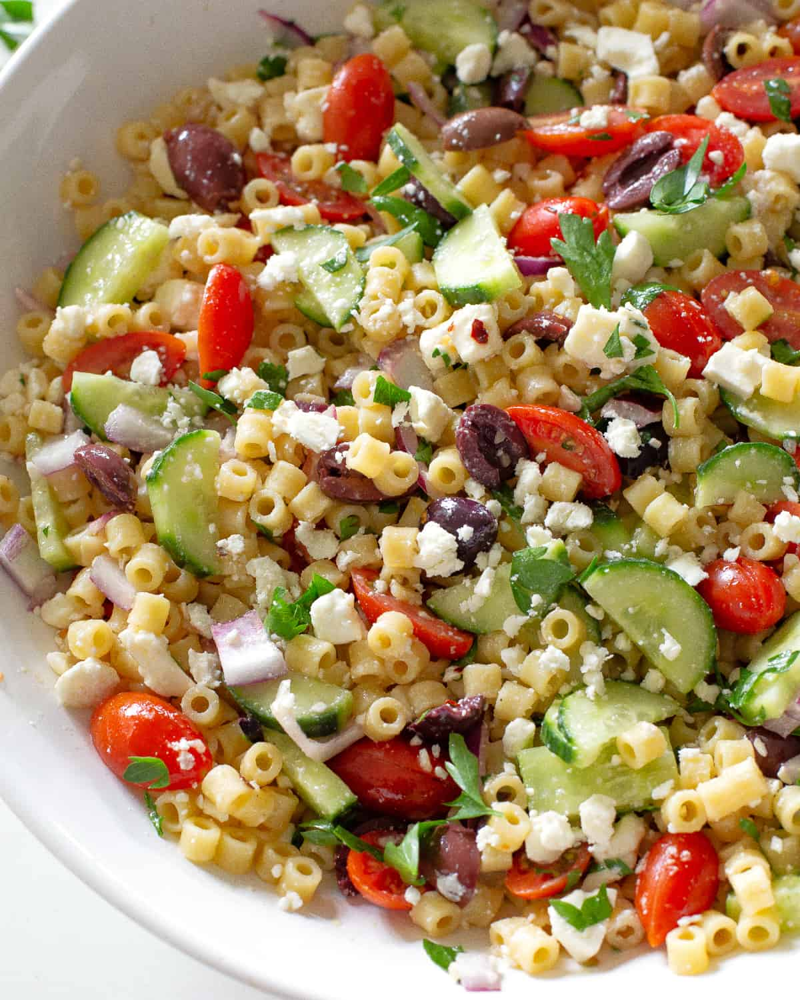

Greek Pasta Salad

Description
Great dish to make-ahead!
Ingredients
- Olive Oil, 1/4 cup
- Balsamic Vinegar, 1/4 cup
- Garlic Powder, 1 1/2tsp
- Basil, 1 1/2 tsp
- Oregano, 1 1/2 tsp
- Sugar, 3/4 tsp
- Ground Black Pepper, 3/4 tsp
- Macaroni, cooked, 2 1/2 cups
- Pepperoni, sliced, 3/4 cup
- Mushrooms, sliced, 3 cups
- Olives, 4 oz
- Cherry Tomatoes, halved, 15
- Red Bell Pepper, sliced, 1 cup
- Feta, 3/4 cup
- Green Onion, 1/2 cup
Steps
-
In a large bowl, combine the olive oil, balsamic vinegar,
garlic powder, basil, oregano, sugar, and ground black pepper.
-
Add in the macaroni, pepperoni, mushrooms, olives, tomatoes,
red bell pepper, and Feta.
-
Cover and refrigerate for 3 hours, before serving.